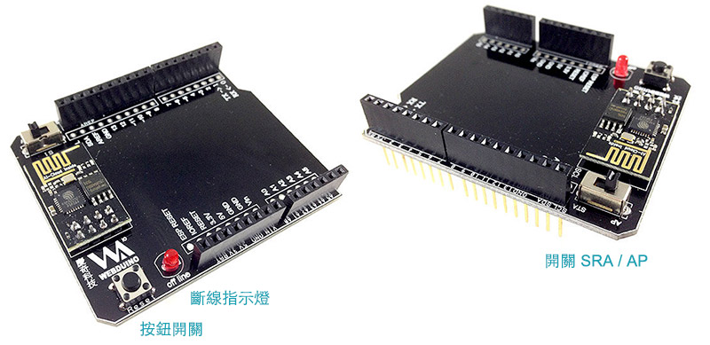

Webduino Fly ( Arduino UNO 雲端擴充板 )
Webduino Fly 是因應 Arduino UNO 誕生的開發板，也稱為 Arduino UNO 雲端擴充板，當 Arduino UNO 套用 Webduino Fly 之後，立即就變成具備透過 Wifi 控制的能力，立即擁有完整的 Webduino 開發功能，易學易用，不管是入門使用者、進階開發者、資深研究者等，不需要理會硬體的煩雜技術，只需用 Web 技術，就可以控制 Arduino 相容的感應模組的神兵利器！
售價：
新台幣 840 元整 ( 已含稅 )
點選「立刻購買」，將會前往 Webduino 露天賣場，貨運可以選擇「超商貨到付款」、「郵局包裹」、「7-11 取貨」模式，購買前請先 閱讀購買須知以及退換貨說明，歡迎政府機關、教育單位或公司行號採購，採購相關資訊請 來信 或來電 07-3388511 洽詢。
產品說明：
- 1. 開關 STA 模式：Arduino 模式 ( 藍牙、序列埠 ) 、Wi-Fi 初始化設定
- 2. 開關 AP 模式：Webduino 模式 ( Wi-Fi )
- 3. 斷線指示燈：Webduino 模式下，若 Wi-Fi 斷線會亮燈
- 4. 按鈕：Reset

和 Arduino UNO 組裝照片：

初次使用必看：
實作 Webduino Fly 之前，最重要的就是進行初始化設定，初始化設定的目的在於讓 Webduino Fly可以自動上網，請連結至初始化設定教學頁面按照步驟設定，確保可以正常使用。此外，要走 Arduino Firmata 的通訊協定，所以必須「要燒錄具有 Firmata 通訊協定的韌體」，請點選下方網址觀看燒錄步驟與相關設定，讓你的 Arduino UNO 長出 Web 的翅膀，一起遨遊雲端！
1. Webduino Fly 初始化設定教學：https://webduino.io/tutorials/info-04-uno-setup.html
2. Arduino 韌體下載與燒錄教學：https://webduino.io/tutorials/info-07-arduino-ino.html